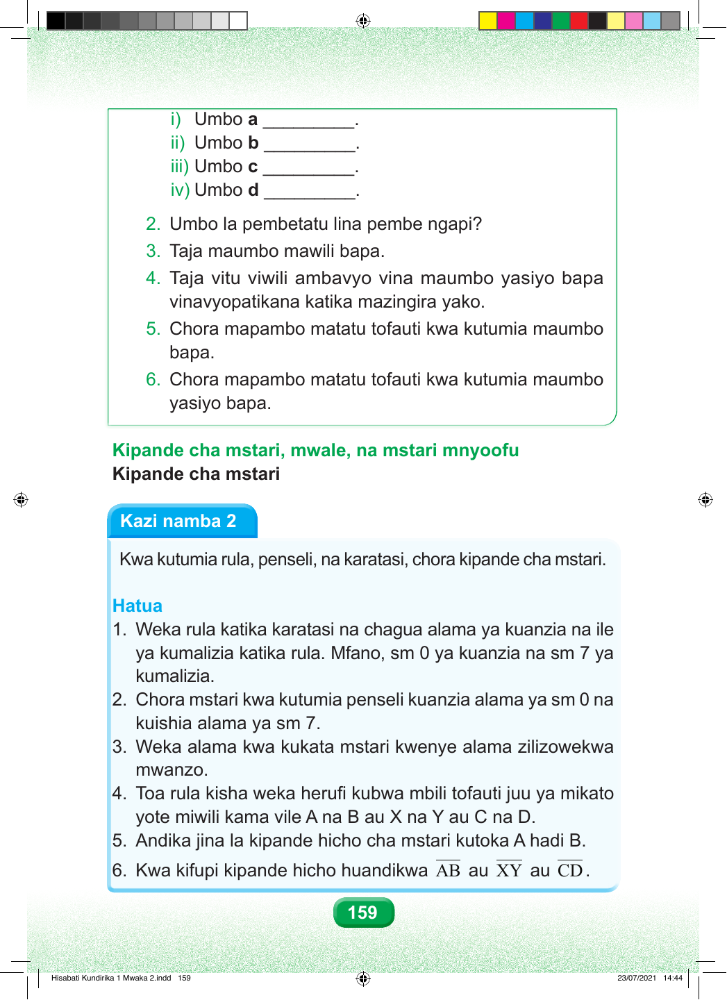

i) Umbo a _________. ii) Umbo b _________. iii) Umbo c _________. iv) Umbo d _________. 2. Umbo la pembetatu lina pembe ngapi? 3. Taja maumbo mawili bapa. 4. Taja vitu viwili ambavyo vina maumbo yasiyo bapa vinavyopatikana katika mazingira yako. 5. Chora mapambo matatu tofauti kwa kutumia maumbo bapa. 6. Chora mapambo matatu tofauti kwa kutumia maumbo yasiyo bapa. Kipande cha mstari, mwale, na mstari mnyoofu Kipande cha mstari Kazi namba 2 Kwa kutumia rula, penseli, na karatasi, chora kipande cha mstari. Hatua 1. Weka rula katika karatasi na chagua alama ya kuanzia na ile ya kumalizia katika rula. Mfano, sm 0 ya kuanzia na sm 7 ya kumalizia. 2. Chora mstari kwa kutumia penseli kuanzia alama ya sm 0 na kuishia alama ya sm 7. 3. Weka alama kwa kukata mstari kwenye alama zilizowekwa mwanzo. 4. Toa rula kisha weka herufi kubwa mbili tofauti juu ya mikato yote miwili kama vile A na B au X na Y au C na D. 5. Andika jina la kipande hicho cha mstari kutoka A hadi B. 6. Kwa kifupi kipande hicho huandikwa AB au XY au CD. 159 Hisabati Kundirika 1 Mwaka 2.indd 159 23/07/2021 14:44